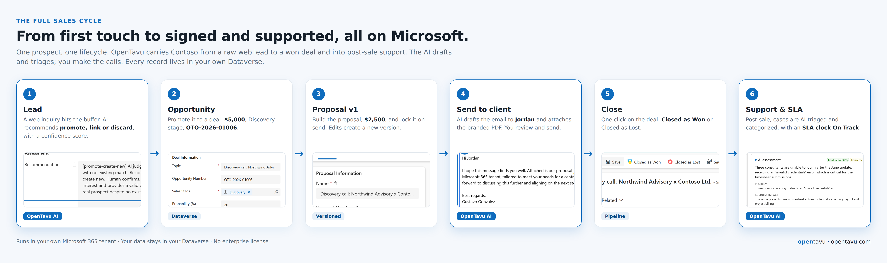
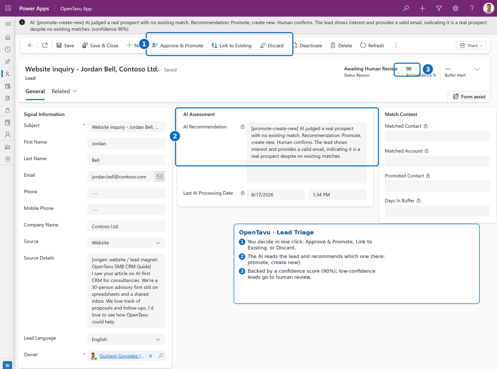
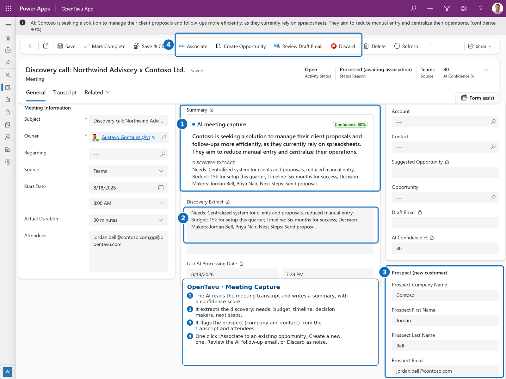
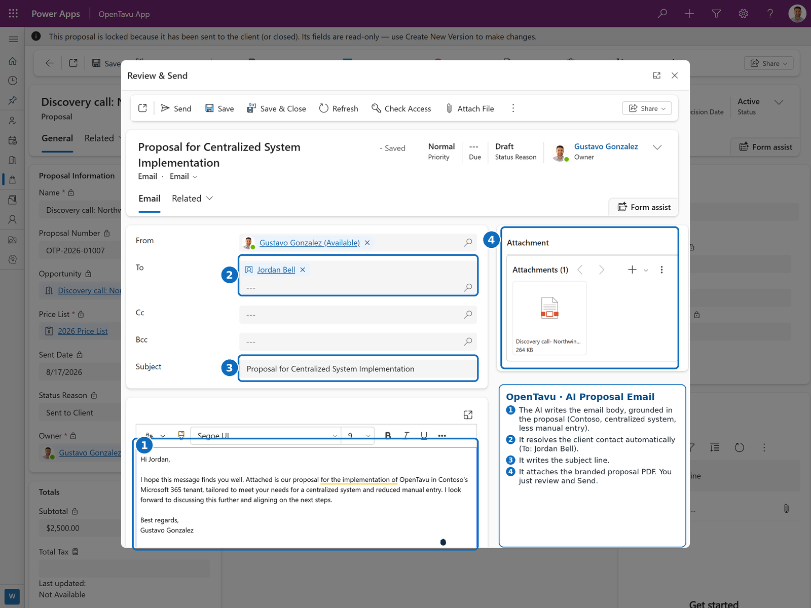
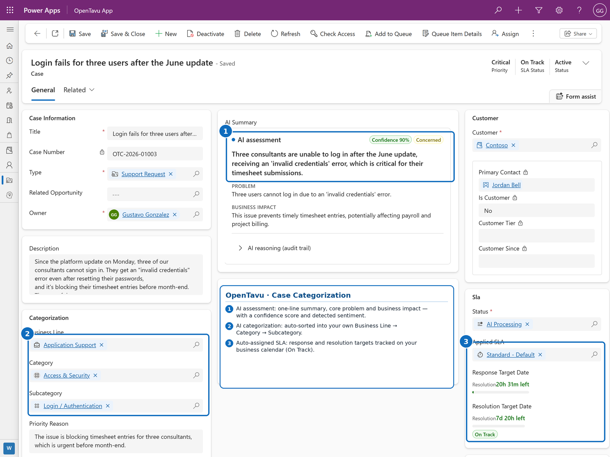

Leads nobody answered in time. Quotes that took half a day. Follow-ups that lived in someone's spreadsheet. We start with a diagnosis of how you sell, measure where you are today, and build only what moves that number.
Your data stays in your own environment · No lock-in · We run it for you
They lose them in the follow-up.
A lead writes while you're busy. By the time someone answers, they already hired someone else.
The proposal goes out and nobody calls back. It isn't a "no", it's a forgotten "maybe".
The CRM says one thing, the spreadsheet says another, and the team goes with memory.
We sit with you and map how clients come in, get quoted and close.
We take your numbers today: response time, leads handled, proposals sent and followed up.
We automate with AI only what moves those numbers, without adding another screen for your team.
We review the numbers with you: where we were, where we are now.
Every project has an agreed metric. We don't promise to double your sales. We promise results you can measure.
We build on the Opentavu framework, an open-source CRM framework on Microsoft Power Platform. The AI proposes, decides with confidence thresholds and escalates only the exceptions. Follow one prospect, Contoso, from first message to support case.
Activity capture and lead triage keep your data clean, so the CRM you pay for actually stays trustworthy.
Context-aware drafts and proposals from your real client history: a branded PDF and a ready email in one click.
Incoming requests are categorized, prioritized and routed automatically, so your small team stops sorting inboxes.

A prospect asks for information from a web form. Power Automate captures the lead and sends an automatic reply, and the AI triages it before you touch anything: it matches the lead against your CRM and recommends promote, link or discard, with a confidence score. You approve the ones that create new records.
Name, email, company, message, language.
Captures the lead and sends an automatic reply.
The lead lands in your buffer, tagged by source.
Matches your CRM and recommends: promote, link, or discard.
One click. New records only after you confirm.

After the discovery call, pull the Teams transcript. The AI writes the summary and extracts the discovery, flags the prospect and their company, and turns it into an opportunity in one click. It even drafts the follow-up email.

When the proposal is ready, Opentavu writes the client email grounded in it, resolves the recipient, and attaches the branded PDF. You review and send.

Once Contoso is a client, every incoming case is read, categorized into your own business lines, and put on an SLA clock, with low-confidence cases routed to human review.

It isn't a feature-by-feature clone of the big CRMs. It's a different economic model: the intelligence you want, on infrastructure you may already pay for, without the lock-in.
Any business that wins work by proposal or relationship, where a lost follow-up is lost revenue: professional services, agencies, contractors, clinics, insurance, real estate. You'll know it fits if you recognize these two traits.
You scope, quote and deliver engagements. Proposals and SOWs are how you close, and senior time is your scarcest resource.
Recurring clients, referrals and RFPs, run by a small team that can't afford CRM busywork or generic SaaS bloat.
Opentavu is open source under the MIT license. The full framework lives on GitHub: review it, run it in your own tenant, or fork it. For Power Platform consultants, it's a production-grade AI-first CRM you can deliver to your own clients, and a partner program if you'd rather we route leads and the managed AI layer your way.
A short call to understand how you sell today and where the money slips away. No slides, no license quote.
Book a diagnosis